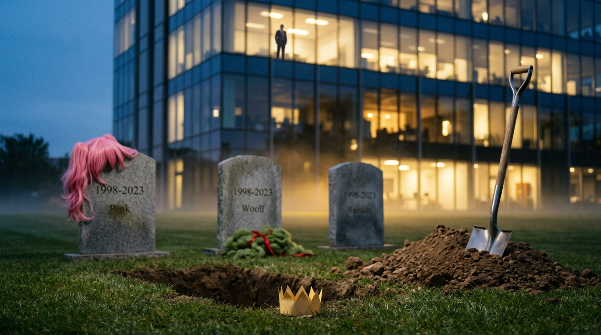
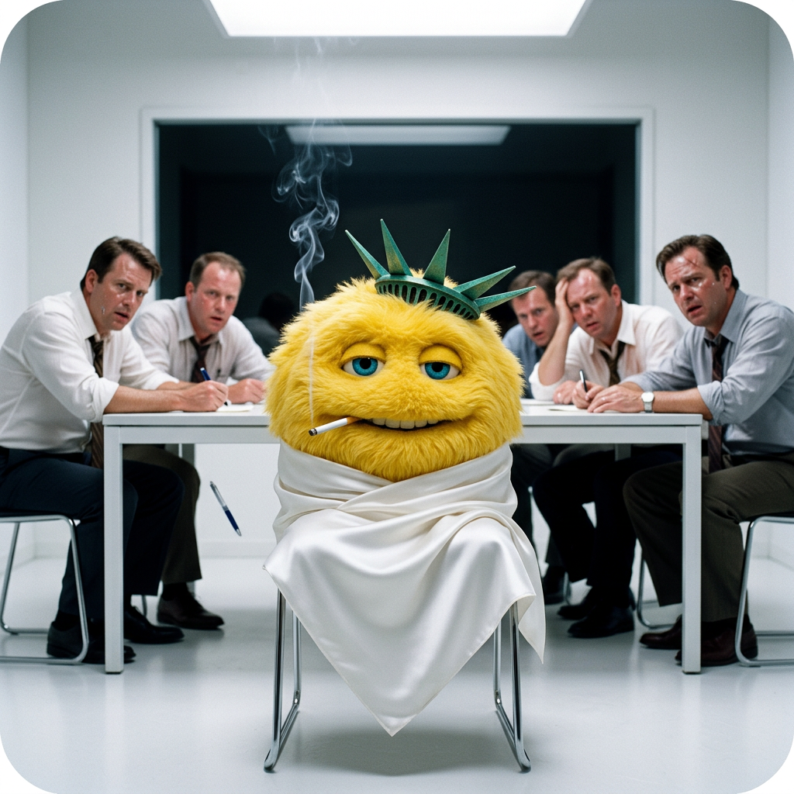
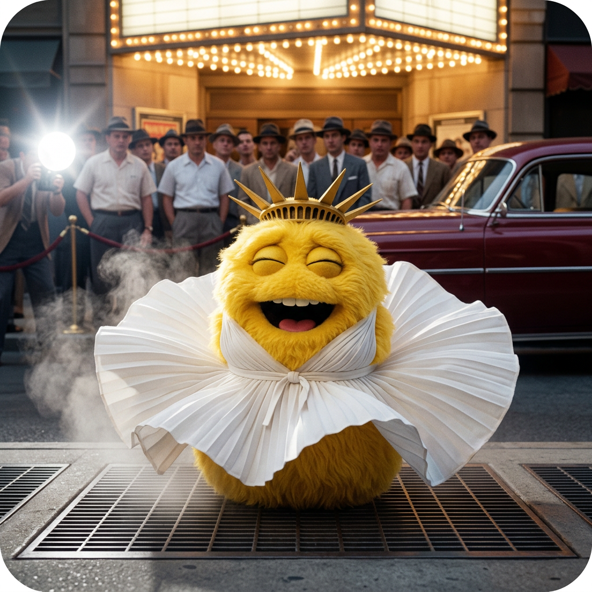
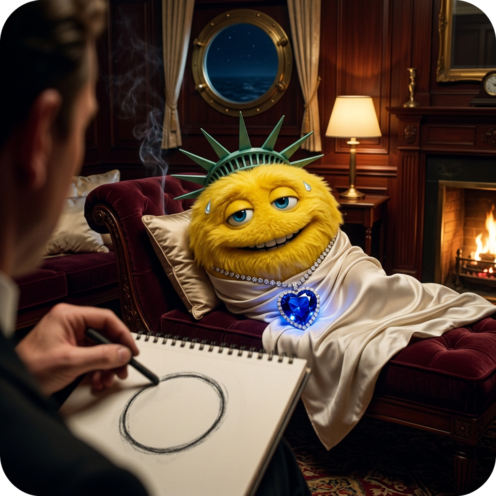
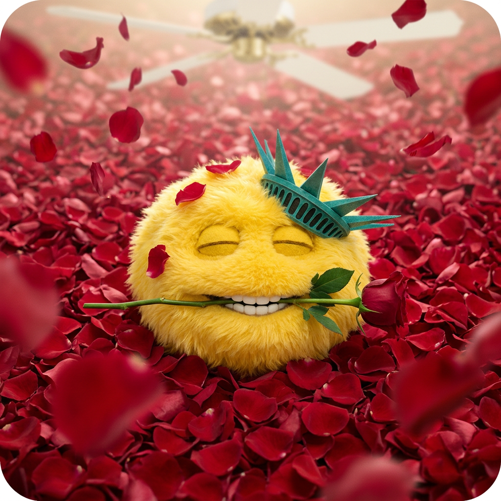

Liberty Biberty Thirst Traps: John Oliver’s Kill Shot
Part of The Attention Machine · Chapter 5 of 6 →How to Kill a Corporate Mascot: Love It Wrong, Love It Loud, Love It in Lingerie
There is a ball of yellow felt the size of a volleyball, wearing a crown, and a multinational insurance company has bet roughly half its advertising budget on it.
Sit down. I mean it. Get comfortable, pour whatever you pour on a Sunday, because I’m about to explain modern brand warfare using a sheep, a cartoon spy, a cereal tiger and the furry community, and you are going to come out the other side smarter and slightly dirtier. Why? Because I said so, you beautiful degenerate. Here’s a stick, go play with it.
Full disclosure: I never saw the ad. Liberty Mutual doesn’t advertise in Buenos Aires. I met the puppet through John Oliver, which means the man trying to kill it is now its biggest distributor.
Ninety seconds, whispered, if you’d rather have the field guide before the dissertation. The long version starts below, and it has pictures.
Meet the Defendant
On October 11, 2026, John Oliver closed Last Week Tonight by looking straight into the camera at Liberty Mutual’s newest mascot and delivering the review of the year: “That right there is a fuzzy testicle with teeth.”
He then compared it to the thing that sits on Big Bird’s chest at night while Big Bird can’t move. Which is a sleep paralysis demon, which is correct, which is the cruelest true thing anyone has said about a puppet since the Henson people saw Meet the Feebles.
Let’s do the paperwork, because the madness only works if the facts are clean.
That last part matters later. Hold onto it. Literally, if you can find something to hold.
Lebel’s pitch for the thing was reasonable, which is the scary part. The flub had been living in the culture rent-free since 2019, so why not give it a body? In her words, “We’re not manufacturing a mascot and hoping it sticks.” They skipped CGI. They skipped AI. They went practical, real felt, a real hand up its keister, the way God and Kermit intended.
And it tested well! Focus groups liked it. System1’s ad testing gave the debut above-average marks for short-term sales potential and brand recognition. On paper, Biberty is a sound investment by serious adults with MBAs, NDAs and the posture of people who have never once been called a fuzzy testicle on national television.
Then the paper met the public.
Hate Is a Media Buy
Here’s the trap, and it’s the same trap I wrote about with the Sydney Sweeney jeans circus: outrage is the product.
When you hate an ad, you talk about it. When you talk about it, you repost it. When you repost it, you are doing the brand’s media planning for free, on your own phone, with your own thumbs, on your own time, and the brand is sitting in a glass tower in Boston watching your rage convert into “unaided awareness” like a man watching his neighbor mow his lawn for him. Then waving. Then going inside to count it.
Oliver understood this. He played a montage of people begging Liberty Mutual to retire Biberty, one of them declaring a blood feud with the puppet as if it were Voldemort, and then pointed out that every one of those posts was a little gift basket for the insurance company.
So he flipped it.
“As Kiwibank has taught us, love can do what hate can’t.”
Translation: you can’t kill a mascot by hating it. Hate keeps it warm. You kill a mascot by loving it in a way the brand can’t put in a commercial. You make it horny. You make it so the first page of image results for the company’s name looks like the back room of a Tijuana pharmacy. You make it radioactive to the one thing a corporation fears more than a lawsuit: a VP of Brand Safety with a weak stomach.
The show seeded the effort itself. A staffer drew a series of suggestive Biberty illustrations, Oliver explained they’d asked for a four out of ten, and then warned Liberty Mutual that a six was something they did not want to see. He told viewers they might want to mute the word “Biberty” for the week.
The internet did not mute anything. The internet put on its good underwear.
The Sheep Who Launched a Thousand Takedown Notices

STOP.
Pull the car over. Because you can’t understand the Biberty campaign without understanding the sheep, and the sheep is the funniest corporate catastrophe of 2026 so far, and yes, I’m including the companies run by Elon.
In June, Kiwibank, a state-owned bank in New Zealand, launched a campaign starring Buck, a cute CGI sheep with green wool, telling customers to stop following the flock. A noble message. A country with 4.5 sheep per human being, choosing a sheep as its banking spokesthing. What could go wrong.
In July an X user posted a GIF of Buck with a caption I am going to reproduce in full, because the editor (me) said so: “I WANT TO FUCK THE KIWIBANK SHEEP.”
New Zealanders have been hearing sheep jokes from Australians since roughly the Bronze Age, so you’d think a bank there would have the reflexes of a cat about this. Instead Kiwibank hired a law firm, MinterEllisonRuddWatts, and started firing copyright takedown notices under the American DMCA at the people posting horny Buck memes. Some of the targets were furry accounts on Bluesky. The bank’s spokesman described the problem as “explicit and harmful content being shared using Buck’s image.”
Now. If you’ve been on the internet for longer than a sneeze, you know what happens next. It has a name. In 2003 Barbra Streisand sued to suppress an aerial photo of her Malibu house, and the lawsuit made millions of people go look at her house. Censorship is a dinner bell.
The memes multiplied. One rallying cry went around: “what if we ALL say the kiwibank sheep is sexy. They can’t get us all.” The original post passed four million views. New Zealand’s Free Speech Union wrote the bank an open letter arguing that using copyright as a content filter is censorship, “even when the subject is a sheep.” Which is the single greatest clause in the history of civil liberties. Put it on the Lincoln Memorial. Carve it under the Gettysburg Address.
And then the part Oliver noticed: Kiwibank largely stopped posting Buck on its own social feeds and switched off comments on the posts that remained.
The sheep didn’t get fired. The sheep got… put out to pasture. By the bank. In its own campaign. Because the internet loved it in a way nobody in a marketing department could print.
That’s the blueprint.
A Brief History of Mascots Who Were Loved to Death
Biberty isn’t the first. Biberty’s not even the first insurance mascot. Let me walk you through the cemetery, because there are headstones here, friend, and somebody keeps leaving flowers.
Erin Esurance. Mid-2000s, Esurance launched a pink-haired cartoon secret agent in a catsuit, cut from the same cloth as Jennifer Garner in Alias, by way of a Saturday morning cartoon, approved by every fourteen-year-old with a modem. She worked. Brand awareness climbed. Then the internet found her, and the internet did what the internet does, and fan-made pornography of Erin became so plentiful that searching her name without a filter returned mostly smut.
Below Clippy. Let that sit on your chest like Biberty on Big Bird. A paperclip with eyebrows that interrupted your résumé to ask if you were writing a letter beat a woman built by professionals to be likable. The internet loved Erin so hard it made her unlovable to everybody else.
Tony the Tiger. In January 2016, Kellogg’s social team started mass-blocking furries who had spent months flooding the Frosted Flakes tiger’s replies with requests that cannot be printed on a cereal box. The furries, blocked, did not go quietly. They came back louder. And the official Tony account replied with a plea so polite it should be studied at diplomacy school: “let’s keep things gr-r-reat – & family-friendly if you could.”
If you could. If you could. A cartoon tiger, standing in the doorway of the internet in his little red bandana, asking a crowd of thousands to please consider the children, while the crowd held up signs that said DADDY.
Meanwhile, over at Cheetos, Chester Cheetah told the same crowd he welcomed all fans to his feed. Chester has always been a bit of a slut. God bless him for it.
A Word About the Furries, Since Somebody’s Mother Is Going to Ask
I’m not freaking Alfred Kinsey, so I’m not going to pretend I can map the human libido with a clipboard. But let’s be fair to the fuzzy folks, because they’ve been the punchline of this story for a decade and they’re the ones who keep getting the facts right.
The furry fandom is mostly people who love anthropomorphic animal characters: drawing them, writing them, building elaborate costumes called fursuits and going to conventions where everybody is extremely nice and slightly overheated. Yes, there’s an adult corner. Every fandom has an adult corner. Star Trek has an adult corner and it invented the genre. The difference is that when a corporation releases a cute animal character into the wild with big eyes and no pants, the furries are the first to notice that the emperor has no pants, because to them that’s the whole appeal.
When Kiwibank’s lawyers went after furry accounts on Bluesky, one of them answered with a line that’s better copywriting than anything in the Buck campaign: “You can’t copyright our culture.”
And they’ve got a point, of a sort. The company built a creature engineered to be adorable, aimed it at the public, and then acted shocked when the public adored it in more than one direction. You don’t get to release a pheromone and sue the moths.
So, a toast. To the furries, the honey badgers of brand safety. Ten years of watching corporations accidentally build their dream date. They’ve been doing John Oliver’s bit since before John Oliver had the budget.
The Basic Instinct Problem
Here is where I have to be honest about a tactical flaw in the campaign, and it is anatomical.
The classic thirst trap, the one every horny meme is ultimately quoting, is Sharon Stone in the interrogation room in Basic Instinct, 1992, the cigarette, the white dress, the slow uncrossing of the legs that made a roomful of detectives forget the English language. Paul Verhoeven built a whole career’s reputation on about four seconds of it.
Biberty has no legs.
I’m not editorializing. The trade press already checked. One profile of the mascot asked whether Biberty has legs, and answered: “In a literal sense, no.”
So how do you make a thirst trap out of a creature with nothing to cross? It’s a philosophical problem. It’s Zeno’s paradox with a cigarette. Every pose is a pose of pure implication. The leg uncross becomes a slow quarter-turn of a felt sphere, and somehow, God help me, that’s worse. That’s the six out of ten Oliver warned them about. A ball, rotating, in a white silk wrap, while a detective sweats.
The internet, being the internet, is not deterred. LateNighter’s roundup of submissions included Biberty working out, Biberty snuggled up with the Kiwibank sheep, and Biberty paired with Big Bird, and noted that most of them appear to be AI-generated. Somewhere a GPU in a data center in Oregon is running hot because a man in Ohio wanted to see an insurance puppet in a bath full of rose petals.
That’s not a sentence you could’ve written in 2019. That’s progress. Allegedly.
The Hall of Fame (Four Out of Ten, as Prescribed)
The doctor ordered a four. I’m a patient man. Here’s my contribution to the effort, four pictures, four classic films, one yellow ball with nothing to cross.




Liberty Mutual, if you’re reading this, and your lawyers are, I’ve already got the headline for the takedown notice. It’s going to be a good post. You’ll love it. Four out of ten.
The Case Against Me (and Against John Oliver)
Fair is fair. Here’s the argument I can’t wave away.
One: this is just free advertising with extra steps. A commenter on LateNighter put it bluntly, calling the whole thing a push to make AI slop that hands a corporation free publicity. And he’s not wrong on the mechanics. Every horny Biberty is still a Biberty. Liberty Mutual’s CMO said in July she wanted the character to “work his way into pop culture” within six months. Oliver delivered it in under three, on HBO, for nothing. If I were running Liberty Mutual’s media budget I’d send him a fruit basket. Unmarked.
Two: mascots that get hated often survive. The LiMu Emu has been annoying people since 2019 and he’s still on the payroll. The guy in the Progressive apron has outlasted marriages. System1’s own read on Biberty is that mascots can take years to catch on, and nobody judges a franchise on its pilot.
Three: Kiwibank and Esurance are not the same as Liberty Mutual. Kiwibank is a state-owned bank in a small country with a legal department that panicked. Esurance had a mascot polling below Clippy before the smut. Liberty Mutual is the sixth-largest insurer in the United States and has the stomach of a goat.
My answer: all three are true, and Oliver still wins the argument, because he was never trying to sink the stock. He was trying to make the thing impossible to love in the way the brand needs it loved. A mascot’s only job is to be safe to put next to a minivan. The day the image search is mostly Biberty in a negligee, the minivan people get nervous. That’s the whole lever. It doesn’t need to win. It needs to get weird.
And if it fails? We got four thousand pictures of a testicle in lingerie and a free education in how attention works. There are worse Sundays.
Somewhere, a Lavender Walrus Is Laughing
Which brings me back to the morgue.
Every corporate mascot is built to be loved. That’s the whole spec. Big eyes, soft edges, no threat, a little crown. The trouble is that love is not a thing you can license. You can’t put it in the contract. You can’t tell it which direction to flow. The moment you release a lovable thing into a public of eight billion people, some fraction of that public is going to love it exactly the way you didn’t plan, and some smaller fraction is going to draw it, and the smallest, holiest fraction is going to draw it with its legs crossed, and it doesn’t have legs, and they’ll draw them anyway.
So go ahead. Love Liberty Biberty. Love him loud. Love him wrong. Love him at a strict four out of ten, as the doctor ordered, and watch a company that wanted its yellow ball in pop culture discover what pop culture does to yellow balls.
Me? I’ve got four prompts to run and a GPU to warm up. I’m told I’ll be among the chosen when the puppets rise. So peachy.
Quick Questions From the Cheap Seats
What is Liberty Biberty?
Liberty Biberty is Liberty Mutual’s newest mascot, a volleyball-sized fuzzy yellow puppet with a crown and no limbs, built by Jim Henson’s Creature Shop and launched on July 20, 2026. Its name comes from a 2019 Liberty Mutual ad in which an actor kept mispronouncing the company’s name.
What did John Oliver say about Liberty Biberty?
On the October 11, 2026 episode of Last Week Tonight, Oliver called the mascot “a fuzzy testicle with teeth,” compared it to Big Bird’s sleep paralysis demon, and urged viewers to post sexualized images of it instead of hate, arguing that hate only gives brands more attention.
Why would sexy fan art get rid of a mascot?
Brands need mascots that are safe to show families. When search results and social feeds fill with sexualized versions of a character, the character becomes a brand-safety risk. Esurance retired its pink-haired spy Erin in 2010 after years of this, and Kiwibank largely stopped posting its sheep mascot Buck on social media in 2026.
What happened with the Kiwibank sheep?
Kiwibank launched Buck, a green-wooled CGI sheep, in June 2026. After horny memes went viral in July, the bank sent copyright takedown notices under the DMCA, which multiplied the memes in a classic Streisand effect. The bank then largely stopped posting Buck and turned off comments on remaining posts.
Did furries really flood Tony the Tiger’s Twitter?
Yes. In January 2016 Kellogg’s mass-blocked furry accounts that had been sending sexual replies to the Frosted Flakes mascot, and the official Tony account asked fans to keep things “family-friendly.” Chester Cheetah’s account took the opposite approach and welcomed them.
Is making Liberty Biberty thirst traps legal?
I’m not a lawyer, and nobody should take legal advice from a man who just wrote eleven minutes about a felt ball. Parody and commentary have real protections in the US, but Kiwibank showed that brands can and will send takedown notices, so expect platforms to remove some posts.